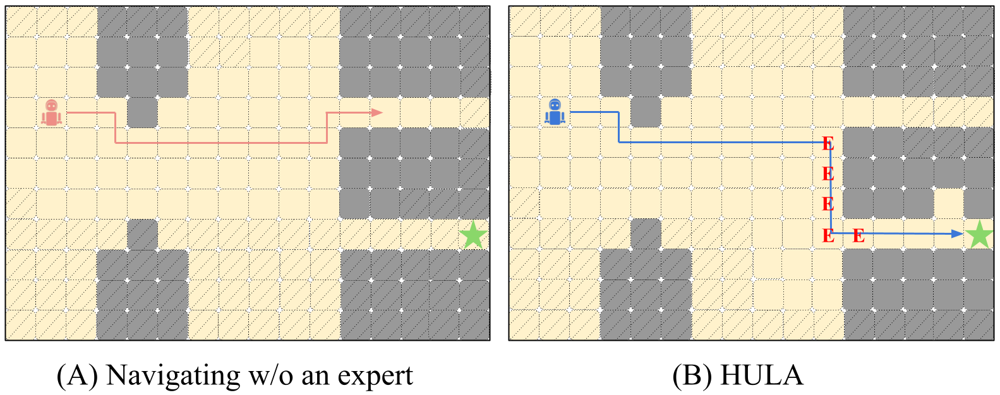

Decision Making for Human-in-the-loop Robotic Agents via Uncertainty-Aware Reinforcement Learning
In a Human-in-the-Loop paradigm, a robotic agent is able to act mostly autonomously in solving a task, but can request help from an external expert when needed. However, knowing when to request such assistance is critical: too few requests can lead to the robot making mistakes, but too many requests can overload the expert. In this paper, we present a Reinforcement Learning based approach to this problem, where a semi-autonomous agent asks for external assistance when it has low confidence in the eventual success of the task. The confidence level is computed by estimating the variance of the return from the current state. We show that this estimate can be iteratively improved during training using a Bellman-like recursion. On discrete navigation problems with both fully- and partially-observable state information, we show that our method makes effective use of a limited budget of expert calls at run-time, despite having no access to the expert at training time.
Paper
Latest version: arxiv

Supplementary Video
Team


BibTeX
TBDContact
If you have any questions, please feel free to contact Zhanpeng He